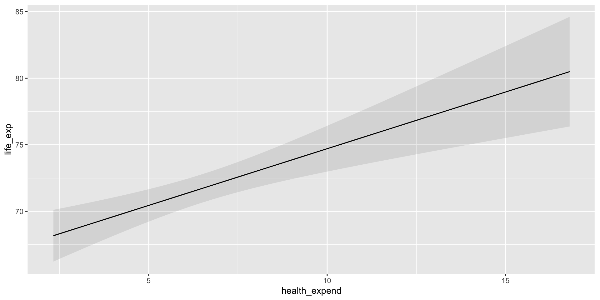
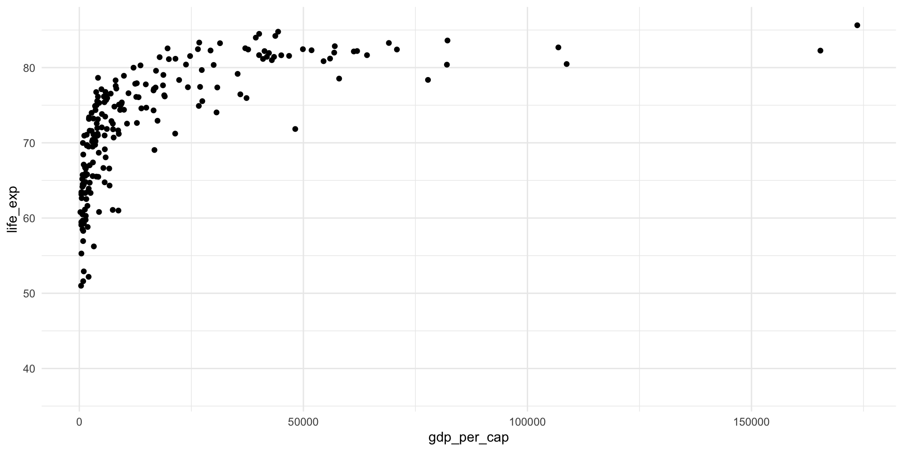
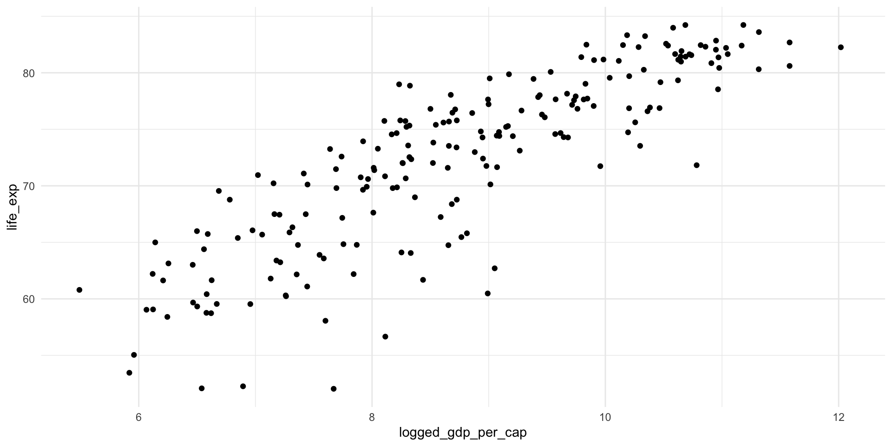

install.packages("plotly")Multiple Regression
Readings
Class
Pollock & Edwards, Chapter 9
Lab
Pollock & Edwards R Companion, Chapter 9
Section
library(tidyverse)
library(wbstats)
library(broom)
library(modelsummary)
library(marginaleffects)
library(plotly)
library(ggdist)Let’s take a look at the determinants of citizens’ average life expectancy. Suppose that we hypothesize that the greater proportion of a country’s GDP that it spends on healthcare, the more years its citizens should expect to live, on average. Let’s build a simple linear regression model of some observed data.
Binary linear regression model
First, we can gather our data from the World Bank Data Center:
health_df <- wb_data(
indicator = c("SP.DYN.LE00.IN", "SH.XPD.CHEX.GD.ZS"),
start_date = 2016,
end_date = 2016
) |>
rename(
life_exp = SP.DYN.LE00.IN,
health_expend = SH.XPD.CHEX.GD.ZS
)
health_df# A tibble: 217 × 6
iso2c iso3c country date health_expend life_exp
<chr> <chr> <chr> <dbl> <dbl> <dbl>
1 AW ABW Aruba 2016 NA 75.6
2 AF AFG Afghanistan 2016 11.8 63.1
3 AO AGO Angola 2016 2.71 61.1
4 AL ALB Albania 2016 6.73 78.9
5 AD AND Andorra 2016 6.91 NA
6 AE ARE United Arab Emirates 2016 3.90 79.3
7 AR ARG Argentina 2016 9.86 76.3
8 AM ARM Armenia 2016 9.95 74.7
9 AS ASM American Samoa 2016 NA NA
10 AG ATG Antigua and Barbuda 2016 5.12 78.2
# ℹ 207 more rowsNext, we fit our linear regression model:
m <- lm(life_exp ~ health_expend, data = health_df)
summary(m)
Call:
lm(formula = life_exp ~ health_expend, data = health_df)
Residuals:
Min 1Q Median 3Q Max
-21.506 -4.942 1.611 5.804 12.768
Coefficients:
Estimate Std. Error t value Pr(>|t|)
(Intercept) 66.7411 1.3838 48.231 < 2e-16 ***
health_expend 0.7604 0.1932 3.936 0.000119 ***
---
Signif. codes: 0 '***' 0.001 '**' 0.01 '*' 0.05 '.' 0.1 ' ' 1
Residual standard error: 7.419 on 179 degrees of freedom
(36 observations deleted due to missingness)
Multiple R-squared: 0.07965, Adjusted R-squared: 0.07451
F-statistic: 15.49 on 1 and 179 DF, p-value: 0.0001185Let’s make this a bit easier to read:
modelsummary(m,
coef_rename = c(health_expend = "Health expenditure (% GDP)"),
statistic = c("t = {statistic}", "SE = {std.error}", "conf.int"))| (1) | |
|---|---|
| (Intercept) | 66.741 |
| t = 48.231 | |
| SE = 1.384 | |
| [64.010, 69.472] | |
| Health expenditure (% GDP) | 0.760 |
| t = 3.936 | |
| SE = 0.193 | |
| [0.379, 1.142] | |
| Num.Obs. | 181 |
| R2 | 0.080 |
| R2 Adj. | 0.075 |
| AIC | 1243.1 |
| BIC | 1252.7 |
| Log.Lik. | −618.547 |
| RMSE | 7.38 |
Our model suggests a positive and significant relationship between the proportion that a country spends of its GDP on its healthcare and its citizens’ average life expectancy. This relationship is statistically significant. Every one percentage point increase in a country’s health expenditure is associated with an increase of years for the average citizen’s life expectancy, on average.
We can plot the predicted life expectancy of a country for all plausible values of health expenditure using marginaleffects::plot_predictions():
plot_predictions(m, condition = "health_expend")
But remember all the way back to our session on the relationship between two variables. We know from the Gapminder Project that a country’s life expectancy is strongly associated with its wealth (measured in terms of its GDP per capita). What if the wealth of a country’s citizens also contributes to their average life expectancy? Further, what if the relationship between a country’s health expenditure and its life expectancy is, in fact, driven by its citizen’s wealth? We can use multiple linear regression to answer these questions.
Multiple linear regression model
We can easily incorporate additional independent variables into our linear regression model. First, we need to collect data on each country’s GDP per capita.
gdp_per_cap_df <- wb_data(
indicator = "NY.GDP.PCAP.CD",
start_date = 2016,
end_date = 2016
) |>
transmute(iso3c, date, gdp_per_cap = NY.GDP.PCAP.CD, logged_gdp_per_cap = log(gdp_per_cap))
gdp_per_cap_df# A tibble: 217 × 4
iso3c date gdp_per_cap logged_gdp_per_cap
<chr> <dbl> <dbl> <dbl>
1 ABW 2016 28450. 10.3
2 AFG 2016 523. 6.26
3 AGO 2016 1810. 7.50
4 ALB 2016 4124. 8.32
5 AND 2016 39931. 10.6
6 ARE 2016 41055. 10.6
7 ARG 2016 12790. 9.46
8 ARM 2016 3680. 8.21
9 ASM 2016 13301. 9.50
10 ATG 2016 16449. 9.71
# ℹ 207 more rowsWe can join those data to our previous dataset using dplyr::left_join():
health_gdp_df <- health_df |>
left_join(gdp_per_cap_df, by = c("iso3c", "date"))
health_gdp_df# A tibble: 217 × 8
iso2c iso3c country date health_expend life_exp gdp_per_cap
<chr> <chr> <chr> <dbl> <dbl> <dbl> <dbl>
1 AW ABW Aruba 2016 NA 75.6 28450.
2 AF AFG Afghanistan 2016 11.8 63.1 523.
3 AO AGO Angola 2016 2.71 61.1 1810.
4 AL ALB Albania 2016 6.73 78.9 4124.
5 AD AND Andorra 2016 6.91 NA 39931.
6 AE ARE United Arab Emirates 2016 3.90 79.3 41055.
7 AR ARG Argentina 2016 9.86 76.3 12790.
8 AM ARM Armenia 2016 9.95 74.7 3680.
9 AS ASM American Samoa 2016 NA NA 13301.
10 AG ATG Antigua and Barbuda 2016 5.12 78.2 16449.
# ℹ 207 more rows
# ℹ 1 more variable: logged_gdp_per_cap <dbl>
Note
Remember, the relationship between a country’s average life expectancy and its GDP per capita is not linear:
ggplot(health_gdp_df, aes(x = gdp_per_cap, y = life_exp)) +
geom_point() +
theme_minimal()
We can log transform the GDP per capita to create a more linear relationship:
ggplot(health_gdp_df, aes(x = logged_gdp_per_cap, y = life_exp)) +
geom_point() +
theme_minimal()
Fitting a multiple linear regression model
Let’s update our previous binary linear regression model to include each country’s logged GDP per capita:
m_multi <- lm(life_exp ~ logged_gdp_per_cap + health_expend, data = health_gdp_df)
summary(m_multi)
Call:
lm(formula = life_exp ~ logged_gdp_per_cap + health_expend, data = health_gdp_df)
Residuals:
Min 1Q Median 3Q Max
-15.0753 -1.9420 0.5623 2.5805 8.3517
Coefficients:
Estimate Std. Error t value Pr(>|t|)
(Intercept) 30.8036 1.9340 15.928 <2e-16 ***
logged_gdp_per_cap 4.6836 0.2310 20.275 <2e-16 ***
health_expend 0.1064 0.1115 0.954 0.341
---
Signif. codes: 0 '***' 0.001 '**' 0.01 '*' 0.05 '.' 0.1 ' ' 1
Residual standard error: 4.091 on 177 degrees of freedom
(37 observations deleted due to missingness)
Multiple R-squared: 0.7225, Adjusted R-squared: 0.7194
F-statistic: 230.4 on 2 and 177 DF, p-value: < 2.2e-16modelsummary(m_multi,
coef_rename = c(logged_gdp_per_cap = "GDP per capita (logged)",
health_expend = "Health expenditure (% GDP)"),
statistic = c("t = {statistic}", "SE = {std.error}", "conf.int"))| (1) | |
|---|---|
| (Intercept) | 30.804 |
| t = 15.928 | |
| SE = 1.934 | |
| [26.987, 34.620] | |
| GDP per capita (logged) | 4.684 |
| t = 20.275 | |
| SE = 0.231 | |
| [4.228, 5.139] | |
| Health expenditure (% GDP) | 0.106 |
| t = 0.954 | |
| SE = 0.112 | |
| [−0.114, 0.326] | |
| Num.Obs. | 180 |
| R2 | 0.723 |
| R2 Adj. | 0.719 |
| AIC | 1022.9 |
| BIC | 1035.7 |
| Log.Lik. | −507.466 |
| RMSE | 4.06 |
You can immediately see the rather stark effect of including a country’s (logged) GDP per capita on the statistical significance of the relationship between health expenditure and life expectancy. We will get to that shortly, but first let’s explore what we have built.
The line(ear plane) of best fit
Like our binary linear regression model, this multiple regression model finds the linear equation that minimizes the distance between itself and the observed values. However, this model minimizes the distance between itself and each observed value for both the country’s logged GDP per capita and health expenditure.
plot_ly(health_gdp_df,
x = ~ logged_gdp_per_cap,
y = ~ health_expend,
z = ~ life_exp,
type = "scatter3d",
mode = "markers",
alpha = 0.5)
Tip
This graph is interactive! Have a play around.
Our multiple linear regression model finds the linear plane that minimizes the distance between itself and each of these observed values:
Show the code
# Get all plotted points for logged GDP per capita
points_gdp <- seq(min(health_gdp_df$logged_gdp_per_cap, na.rm = T),
max(health_gdp_df$logged_gdp_per_cap, na.rm = T),
by = 1)
# Get all plotted points for health expenditure
points_health <- seq(min(health_gdp_df$health_expend, na.rm = T),
max(health_gdp_df$health_expend, na.rm = T),
by = 1)
# Get the predicted values for life expectancy from the model
new_df <- crossing(
logged_gdp_per_cap = points_gdp,
health_expend = points_health
)
pred_values <- augment(m_multi, newdata = new_df) |>
pull(.fitted)
pred_values_matrix <- matrix(pred_values, nrow = length(points_health), ncol = length(points_gdp))
# Plot the plane
plot_ly() |>
add_surface(x = points_gdp,
y = points_health,
z = pred_values_matrix,
colors = "pink") |>
add_markers(x = health_gdp_df$logged_gdp_per_cap,
y = health_gdp_df$health_expend,
z = health_gdp_df$life_exp,
type = "scatter3d",
alpha = 0.75) |>
layout(showlegend = FALSE)This line of best fit provides us with an expected average life expectancy for every combination of a country’s plausible logged GDP per capita and heath expenditure.
Interpreting the coefficients
Let’s return to our model:
modelsummary(m_multi,
coef_rename = c(logged_gdp_per_cap = "GDP per capita (logged)",
health_expend = "Health expenditure (% GDP)"),
statistic = c("t = {statistic}", "SE = {std.error}", "conf.int"))| (1) | |
|---|---|
| (Intercept) | 30.804 |
| t = 15.928 | |
| SE = 1.934 | |
| [26.987, 34.620] | |
| GDP per capita (logged) | 4.684 |
| t = 20.275 | |
| SE = 0.231 | |
| [4.228, 5.139] | |
| Health expenditure (% GDP) | 0.106 |
| t = 0.954 | |
| SE = 0.112 | |
| [−0.114, 0.326] | |
| Num.Obs. | 180 |
| R2 | 0.723 |
| R2 Adj. | 0.719 |
| AIC | 1022.9 |
| BIC | 1035.7 |
| Log.Lik. | −507.466 |
| RMSE | 4.06 |
How can we interpret the association between each independent variable and our outcome of interest?
The intercept
Generally:
The expected value of \(Y\), on average and holding all else at zero.
Our model:
A country with a logged GDP per capita of zero and which spends zero percent of its GDP on healthcare is expected to have an average life expectancy of 30.8 years, on average.
The coefficients
Generally:
A one-unit change in \(X_j\) is associated with a \(\beta_j\)-unit effect on \(Y\), on average and holding all else constant.
Our model:
A one-unit increase in a country’s logged GDP per capita is associated with an increase in its average life expectancy of 4.68 years, on average and holding all else constant.
A one percentage point increase in a country’s healthcare expenditure is associated with an increase in its average life expectancy of 0.11 years, on average and holding all else constant.
Predicting our outcome
We can use our model to predict a country’s average life expectancy based on its (logged) GDP per capita and health expenditure.
For example, what is our predicted average life expectancy for a country with a GDP per capita of $20,000 and a health expenditure of 10 percent of its GDP? We can use broom::augment() to answer this question:
pred <- augment(m_multi,
newdata = tibble(logged_gdp_per_cap = log(20000),
health_expend = c(10, 11)))
pred# A tibble: 2 × 3
logged_gdp_per_cap health_expend .fitted
<dbl> <dbl> <dbl>
1 9.90 10 78.3
2 9.90 11 78.4We expect that this country would have an average life expectancy of 78.3, 78.4 years.
Tip
If you head back up to the interactive linear plane graph, you can find the predicted values for all of the included combinations of logged GDP per capita and health expenditure.
How confident are we in our estimates?
Statistical significance of our estimates
We interpret the statistical significance of our estimates exactly as we did with our binary regression model. If the null hypothesis were true, our estimates scaled against their standard errors would fall along a t-distribution. We can see how far our observed estimates scaled against their standard errors (or the t-statistic) falls from zero. In other words, we can calculate the probability that we would observe our estimate or a more extreme estimate if there was, in fact, no relationship between our independent variable and the outcome.
We can use broom::tidy() to calculate these t-statistics and their associated p-values:
tidy(m_multi)# A tibble: 3 × 5
term estimate std.error statistic p.value
<chr> <dbl> <dbl> <dbl> <dbl>
1 (Intercept) 30.8 1.93 15.9 5.16e-36
2 logged_gdp_per_cap 4.68 0.231 20.3 5.06e-48
3 health_expend 0.106 0.112 0.954 3.41e- 1
Note
We will not discuss how to calculate the standard error for our estimates in this course. You can look forward to that in GVPT722.
Confidence intervals around our estimates
We know that our coefficient estimates are merely point estimates of the true association between a country’s logged GDP per capita or health expenditure and its average life expectancy. Using a different simple random sample from our population, we would find different point estimates of these relationships. Let’s build out the range of plausible coefficient estimates.
We are working with the expected average value of \(Y\) for each \(X_j\). Therefore, our coefficient estimates drawn from our null world will follow a t-distribution. We can calculate our confidence interval around our estimated \(\beta_j\) using the usual (if more generalized):
\[ CI_{\beta_j} = \beta_j \pm t*SE_{\beta_j} \]
We can also use broom::tidy() to calculate our confidence intervals:
tidy(m_multi, conf.int = T)# A tibble: 3 × 7
term estimate std.error statistic p.value conf.low conf.high
<chr> <dbl> <dbl> <dbl> <dbl> <dbl> <dbl>
1 (Intercept) 30.8 1.93 15.9 5.16e-36 27.0 34.6
2 logged_gdp_per_cap 4.68 0.231 20.3 5.06e-48 4.23 5.14
3 health_expend 0.106 0.112 0.954 3.41e- 1 -0.114 0.326How confident are we in our model overall?
\(R^2\)
The \(R^2\) value tells us the total amount of variation in our outcome that is explained by the model as a whole. In other words, how much variation in \(Y\) is explained by variation in all \(X_j\)s.
We can use broom::glance() to calculate this:
glance(m_multi) |>
select(r.squared)# A tibble: 1 × 1
r.squared
<dbl>
1 0.723F-test
The F-test asks whether the entire regression model adds predictive power. Formally, it tests whether all of the coefficients are equal to zero.
\[ H_0: \beta_1 = \beta_2 = \beta_3 = ... \beta_k = 0 \]
Generally, when the null hypothesis is true, the ratio of the total sum of squares (the F-statistic) follows the F-distribution. Therefore, we can determine the likelihood that we would find our observed ratio of the total sum of squares if the true ratio of the total sum of squares were zero.
Tip
This is the same logic as the T-test.
Note
Gelman, Hill, and Vehtari (2020) do not recommend using an F-test. Like the t-test, the F-test asks whether our coefficients are significantly different from zero. There are two issues with this approach. First, there are very few circumstances in which we would expect the association between two variables to be exactly zero. Therefore, this approach asks us to reject something that we do not seriously believe to ever be true. Second, significance tests are sensitive to the amount of data you use. With a large enough \(n\) you can reject any null hypothesis.
For their recommended approaches, please refer to their section on cross validation.
The F-test is printed at the bottom of the summary() output:
summary(m_multi)
Call:
lm(formula = life_exp ~ logged_gdp_per_cap + health_expend, data = health_gdp_df)
Residuals:
Min 1Q Median 3Q Max
-15.0753 -1.9420 0.5623 2.5805 8.3517
Coefficients:
Estimate Std. Error t value Pr(>|t|)
(Intercept) 30.8036 1.9340 15.928 <2e-16 ***
logged_gdp_per_cap 4.6836 0.2310 20.275 <2e-16 ***
health_expend 0.1064 0.1115 0.954 0.341
---
Signif. codes: 0 '***' 0.001 '**' 0.01 '*' 0.05 '.' 0.1 ' ' 1
Residual standard error: 4.091 on 177 degrees of freedom
(37 observations deleted due to missingness)
Multiple R-squared: 0.7225, Adjusted R-squared: 0.7194
F-statistic: 230.4 on 2 and 177 DF, p-value: < 2.2e-16References
Gelman, Andrew, Jennifer Hill, and Aki Vehtari. 2020. Regression and Other Stories. 1st edition. Cambridge New York, NY Port Melbourne, VIC New Delhi Singapore: Cambridge University Press.